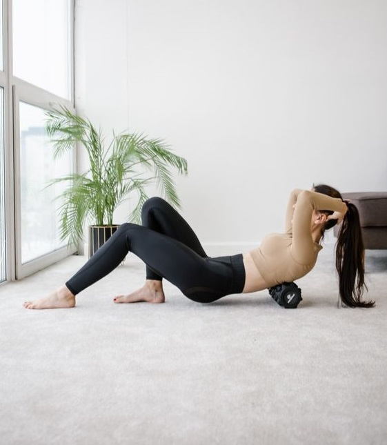

ПОЧЕМУ ВАЖНА РЕГУЛЯРНОСТЬ ТРЕНИРОВОК?
О том, что физическая нагрузка крайне полезна для нашего тела и организма знают многие. Но вот о том, что важна не только сама нагрузка, но и то, как она встроена в жизнь, люди часто забывают. График тренировок и их постоянство – одни из ключевых факторов в достижении успеха. Почему это так важно? Давайте разбираться.
Все дело в устройстве нашего организма. Это очень грамотный механизм, действующий по принципу наименьшего сопротивления, а значит постоянно подстраивающийся под наши нужды. Внедряя тренировки в свою жизнь, мы провоцируем тело расходовать больше энергии, наращивать мышцы и улучшать свои физические показатели, чтобы у нас была возможность спокойно справляться с нагрузками.
В тот момент, когда после повышения физической активности мы вновь ее снижаем, происходит закономерный обратный процесс. Мышцы теряют былую силу, снижается упругость кожи, уменьшаются выносливость, гибкость и координация. Организм перестраивается и избавляется от лишних мышечных волокон, так как им нет более смысла существовать. Таким образом, любой пропуск тренировки – это шаг назад от вашей цели. А длительные перерывы приводят к полному откату, порой еще более сильному, чем было до тренировок, и вам приходится начинать все с начала.
Перед тем, как начать тренироваться, важно определить вашу цель. Наличие цели позволяет нам грамотно подобрать вид физической активности, определить частоту тренировок и тем самым повысить их эффективность. Без цели ваш труд может быть потрачен впустую, и вы рискуете получить в итоге совсем не то, чего хотели.
В зависимости от того, какую цель вы перед собой поставили, различным будет и влияние регулярности тренировок на вашу жизнь. Поговорим о каждой из них в отдельности, ведь они отличаются, и перерывы в разных типах тренировок могут по-разному сказаться на результате.
ПОХУДЕНИЕ
Тренировки с целью сброса лишнего веса построены по принципу создания дефицита калорий с помощью правильного питания и повышения расхода калорий путем внедрения физических нагрузок. То есть вы едите чуть меньше, чем вам необходимо в день и при этом расходуете калорий больше, чем употребляете, чтобы задействовать жировые запасы и тем самым снизить их количество.
Тренировки с целью сброса лишнего веса построены по принципу создания дефицита калорий с помощью правильного питания и повышения расхода калорий путем внедрения физических нагрузок. То есть вы едите чуть меньше, чем вам необходимо в день и при этом расходуете калорий больше, чем употребляете, чтобы задействовать жировые запасы и тем самым снизить их количество.
Тренировки с целью сброса лишнего веса построены по принципу создания дефицита калорий с помощью правильного питания и повышения расхода калорий путем внедрения физических нагрузок. То есть вы едите чуть меньше, чем вам необходимо в день и при этом расходуете калорий больше, чем употребляете, чтобы задействовать жировые запасы и тем самым снизить их количество.
НАБОР МАССЫ
Для тех, кто находится на наборе массы, важно не только иметь постоянную нагрузку, но и планомерно наращивать ее. Мышечные волокна утолщаются и увеличиваются в объеме лишь в присутствии постоянной надобности в этом, которую вы создаете за счет дополнительных весов. Пропуск тренировки в данном случае также будет шагом назад, но не настолько критичным, как при похудении. Набор массы происходит намного медленнее, соответственно и терять эту массу вы будете тоже медленнее.
При этом потери все таки будут. Особенно это заметно на длинной дистанции, когда перерыв в тренировках большой и даже визуально заметны изменения рельефа тела. Плюс ко всему, во время отдыха вы снижаете свою выносливость и физическую силу, то есть первое время, когда вы вернетесь к регулярным занятиям, вам придется потратить время на восстановление былой формы. И только после этого вы сможете продолжить двигаться вперед к своей цели.
ПОДДЕРЖАНИЕ
Те, кто тренируются с целью поддержания своей физической формы на том уровне, на котором она есть, обычно меньше всего замечают существенные изменения в отсутствие тренировок. Тем не менее, здесь тоже важна регулярность. При этом вы можете выбирать любые виды нагрузок, чередовать кардио, силовые или функциональные, заниматься спортом, бегом или плаванием. Главное уделять тренировкам хотя бы 15-20 минут в день. Этого будет достаточно, чтобы поддерживать активный образ жизни.
При снижении количества и продолжительности тренировок, вы заметите, что ваша сердечно-сосудистая система ослабевает, тренироваться становится сложнее и даже в обычной жизни появится одышка и усталость после неожиданно большой физической нагрузки. Чтобы этого не происходило, важно соблюдать регулярность на постоянной основе и сделать спорт неотъемлемой частью своей жизни.
Лучше всегда отмечать прогресс каждой своей тренировки, чтобы можно было наглядно увидеть, как пропуск того или иного занятия отразится на конечных результатах. Девушки отмечают, что такая возможность вдохновляет и мотивирует их, даже если они забыли о важности самой тренировки.